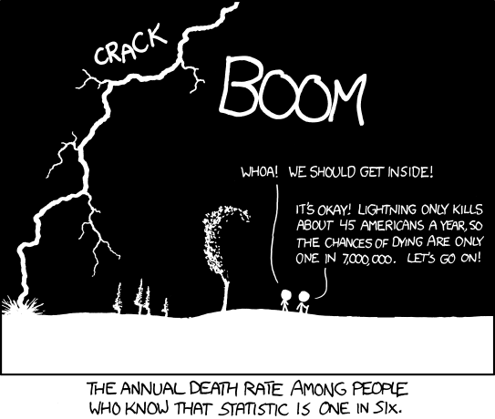

Lesson 4: Conditional Probability
Welcome!

Calendar
Day 1

Day 2
What’s Coming
- Project Milestone 2
- Tidyverse Tutorial applied to your team’s data
- Annex B (for addressing feedback)
- Exploration 11.3B
Updates
Kid Update
Not Cal, but….
DMath Frisbee Update
1-0
Branch Week

- Why I become an Engineer
- What I think you should do
- What do I do as an Engineer
- What is my branch now?
Probability Review
Working Example
Remember this?
Out of 100 students:
- 40 like pizza
- 30 like burgers
- 10 of those included above like both pizza and burgers
Experiment: I select one student at random
Let:
- \(A =\) “student likes pizza”
- \(B =\) “student likes burgers”
Compliments
For any event \(A\):
\[ P(A^c) = 1 - P(A) \]
What is the probablity that a randomly selected student doesn’t like pizza (\(P(A^c)\))?
We know \(P(A) = 40/100 = 0.40\).
By the complement rule:
\[ P(A^c) = 1 - P(A) = 1 - 0.40 = 0.60 \]
Addition Rule
\[ P(A \cup B) = P(A) + P(B) - P(A \cap B). \]
What is the probability a randomly selected cadet likes pizza or burgers? \(P(A \cup B)\)?
By the addition rule:
\[ P(A \cup B) = P(A) + P(B) - P(A \cap B). \]
Substitute values:
\[ P(A \cup B) = 0.40 + 0.30 - 0.10 = 0.60 \]
Mutually Exclusive
Two events are mutually exclusive when it is impossible for both to happen at the same time.
Therefore:
\[ P(A \cup B) = P(A) + P(B) \]
Are events A and B mutually exclusive?
No because:
\[ P(A \cup B) \neq P(A) + P(B) \]
Independence
Two events \(A\) and \(B\) are independent if knowing that one occurs does not change the probability of the other.
\[ P(A \cap B) = P(A)P(B) \]
Equivalently (if \(P(B) > 0\)):
\[ P(A \mid B) = P(A) \]
Intuition: The outcome of one event gives no information about the other.
Does Mutually Exclusive imply independence or no or undetermined?
Are \(A =\) “likes pizza” and \(B =\) “likes burgers” independent?
We check using the multiplication rule for independence:
\[ P(A)P(B) = (0.40)(0.30) = 0.12 \]
But from the data:
\[ P(A \cap B) = 0.10 \]
Since \(0.10 \neq 0.12\), the events are not independent.
Also, they are not mutually exclusive either, because
\[ P(A \cap B) = 0.10 > 0. \]
So in this example, \(A\) and \(B\) are neither independent nor mutually exclusive.
General Note:
If \(A\) and \(B\) are mutually exclusive with nonzero probabilities, they cannot be independent.
New Probability Material
We’ll use a single Factory Machines scenario for all concepts in this section.
Factory Setup (used for all examples)
A factory produces 1,000 items per day using two machines:
- Machine \(M_A\) produces 400 items, of which 40 are defective.
- Machine \(M_B\) produces 600 items, of which 24 are defective.
Define events:
- \(M_A =\) “item came from Machine A”
- \(M_B =\) “item came from Machine B”
- \(D =\) “item is defective”
- \(D^c =\) “item is not defective”
From the counts:
- \(P(M_A) = 400/1000 = 0.40\)
- \(P(M_B) = 600/1000 = 0.60\)
- \(P(D \cap M_A) = 40/1000 = 0.04\)
- \(P(D \cap M_B) = 24/1000 = 0.024\)
- \(P(D) = (40+24)/1000 = 0.064\)
Conditional Probability
The probability that event \(A\) occurs given that event \(B\) occurs:
\[ P(A \mid B) = \frac{P(A \cap B)}{P(B)}, \quad P(B) > 0 \]
Intuition: Restrict the sample space to \(B\); ask what fraction of those outcomes also fall in \(A\).
Example (Factory Machines)
What is \(P(D \mid M_A)\), the probability an item is defective given it was made by Machine \(A\)?
By definition:
\[ P(D \mid M_A) = \frac{P(D \cap M_A)}{P(M_A)}. \]
From the setup:
- \(P(D \cap M_A) = 40/1000 = 0.04\)
- \(P(M_A) = 400/1000 = 0.40\)
So:
\[ P(D \mid M_A) = \frac{0.04}{0.40} = 0.10. \]
Multiplication Rule
Relates intersections to conditional probabilities.
\[\begin{align} P(A \mid B) &= \frac{P(A \cap B)}{P(B)}, \quad P(B) > 0 && \text{definition of conditional probability} \\[24pt] P(A \mid B)\,P(B) &= \frac{P(A \cap B)}{P(B)} \cdot P(B) && \text{multiply both sides by $P(B)$} \\[24pt] P(A \mid B)\,P(B) &= P(A \cap B) && \text{simplify} \\[24pt] P(B \mid A)\,P(A) &= P(A \cap B) && \text{swap $A$ and $B$} \\[24pt] P(A \cap B) &= P(A \mid B)P(B) = P(B \mid A)P(A) && \text{final multiplication rule} \end{align}\]
Intuition: To find the chance that both happen, compute the chance that one happens, then multiply by the chance the other happens given that.
Example (Factory Machines)
Using the rule, compute \(P(D \cap M_B)\).
By the multiplication rule:
\[ P(D \cap M_B) = P(D \mid M_B)\,P(M_B). \]
From counts:
- \(P(D \mid M_B) = 24/600 = 0.04\)
- \(P(M_B) = 600/1000 = 0.60\)
So:
\[ P(D \cap M_B) = (0.04)(0.60) = 0.024. \]
This matches the direct count calculation \(24/1000=0.024\).
From Multiplication Rule to the Law of Total Probability
The multiplication rule shows us how to express the probability of two events happening together in terms of a conditional probability:
\[ P(A \cap B) = P(A \mid B)\, P(B). \]
Now imagine that the whole sample space can be split into two non-overlapping cases (aka mutually exclusive) \(B_1\) and \(B_2\) (for example: “athlete” vs. “not an athlete”).
Since \(B_1\) and \(B_2\) cover all possibilities, any time \(A\) happens, it must happen either with \(B_1\) or with \(B_2\).
To find \(P(A)\), we know that it is the union of where A intersects B in all ways that B can happen. so:
\[ P(A) = P((A \cap B_1) \cup (A \cap B_2)) \]
Because \((A \cap B_1)\) and \((A \cap B_2)\) are mutually exclusive, we can use the mutually exclusive version of the addition rule \(P(E_1 \cup E_2) = P(E_1) + P(E_2)\) to get:
\[ P((A \cap B_1) \cup (A \cap B_2)) = P(A \cap B_1) + P(A \cap B_2). \]
And if we apply the multiplication rule (\(P(E_1 \cap E_2) = P(E_1 \mid E_2)\, P(E_2)\)) to each intersection, we get exactly the Law of Total Probability.
\[ P(A) = P(A | B_1)P(B_1) + P(A | B_2)P(B_2). \]
Law of Total Probability
What we just derived for two outcomes extends to any partition of the sample space.
If \(B_1, B_2, \ldots, B_k\) are mutually exclusive and exhaustive events, then for any event \(A\):
\[ P(A) = \sum_{i=1}^{k} P(A \mid B_i)\, P(B_i). \]
For two outcomes:
\[ P(A) = P(A \mid B_1)\,P(B_1) \;+\; P(A \mid B_2)\,P(B_2). \]
Intuition:
Instead of calculating \(P(A)\) directly, we “partition” the sample space into simpler pieces \(B_1, B_2, \ldots, B_k\). We compute \(P(A)\) by adding up the contributions from each path.
Example (Factory Machines)
What is the overall probability that a randomly chosen item is defective (\(P(D)\))?
Partition by which machine made the item:
\[ P(D) = P(D \mid M_A)P(M_A) + P(D \mid M_B)P(M_B). \]
From counts:
- \(P(D \mid M_A)=40/400=0.10\), \(P(M_A)=0.40\)
- \(P(D \mid M_B)=24/600=0.04\), \(P(M_B)=0.60\)
So:
\[ P(D) = (0.10)(0.40) + (0.04)(0.60) = 0.04 + 0.024 = 0.064. \]
So 6.4% of all items are defective.
Bayes’ Theorem
Bayes’ Theorem lets us “flip” conditional probabilities. It tells us how to update beliefs about a cause (\(B\)) when we observe some evidence (\(A\)).
For events \(A\) and \(B\) with \(P(B) > 0\):
\[ P(B \mid A) = \frac{P(A \mid B)\, P(B)}{P(A)}. \]
Using the Law of Total Probability for \(P(A)\):
\[ P(B_j \mid A) = \frac{P(A \mid B_j)\, P(B_j)}{\sum_{i=1}^{k} P(A \mid B_i)\, P(B_i)}. \]
\[ P(B_2 \mid A) = \frac{P(A \mid B_2)\, P(B_2)}{P(A \mid B_1)P(B_1) + P(A \mid B_2)P(B_2)}. \]
Intuition:
Think of Bayes’ theorem as a way to reverse the condition. If we know how likely \(A\) is when \(B\) happens, Bayes tells us how likely \(B\) is given that we saw \(A\).
Example (Factory Machines)
If an item is defective, what is the probability it came from Machine A?
We want \(P(M_A \mid D)\).
By Bayes’ theorem:
\[ P(M_A \mid D) = \frac{P(D \mid M_A)\, P(M_A)}{P(D)}. \]
The denominator \(P(D)\) comes from the Law of Total Probability:
\[ P(D) = P(D \mid M_A)P(M_A) + P(D \mid M_B)P(M_B). \]
From counts:
- \(P(D \mid M_A)=40/400=0.10\), \(P(M_A)=400/1000=0.40\)
- \(P(D \mid M_B)=24/600=0.04\), \(P(M_B)=600/1000=0.60\)
So:
\[ P(D) = (0.10)(0.40) + (0.04)(0.60) = 0.064 \]
Now substitute into Bayes’ theorem:
\[ P(M_A \mid D) = \frac{0.10 \cdot 0.40}{0.064} = \frac{0.04}{0.064} = 0.625. \]
Thus, if an item is defective, there is a 62.5% chance it was made by Machine A.
Tree Diagram Representation
Another way to picture the Law of Total Probability is to start with the partition (\(M_A\) vs \(M_B\)), then branch into whether \(D\) happens or not under each case.
Start
├── M_A (0.40)
│ ├── D (40/400 = 0.10) ⇒ 0.40 · 0.10 = 0.04
│ └── D^c (360/400 = 0.90) ⇒ 0.40 · 0.90 = 0.36
└── M_B (0.60)
├── D (24/600 = 0.04) ⇒ 0.60 · 0.04 = 0.024
└── D^c (576/600 = 0.96) ⇒ 0.60 · 0.96 = 0.576Adding the two disjoint paths where \(D\) occurs:
\[ P(D) = 0.04 + 0.024 = 0.064. \]
This confirms the Law of Total Probability result and sets up Bayes’ theorem
Example: Medical Test and Probability Rules
A certain disease affects 1% of a population.
A test is used to detect the disease:
- If a person has the disease, the test is positive 92% of the time.
- If a person does not have the disease, the test is positive 7% of the time.
Let’s define events:
- \(D =\) person has the disease.
- \(D^c =\) person does not have the disease.
- \(+\) = test is positive.
- \(-\) = test is negative.
1. Conditional Probability
What is \(P(+ \mid D)\), the probability that a person tests positive given they have the disease?
From the problem statement:
\[ P(+ \mid D) = 0.92 \]
2. Multiplication Rule
What is \(P(D \cap +)\), the probability that a randomly chosen person both has the disease and tests positive?
By the multiplication rule:
\[ P(D \cap +) = P(+ \mid D)\, P(D). \]
Substitute the known values:
\[ P(D \cap +) = (0.92)(0.01). \]
Simplify:
\[ P(D \cap +) = 0.0092 \]
3. Tree Diagram
Draw a tree diagram for this situation.
Branch probabilities
- \(P(D)=0.01,\quad P(D^c)=0.99\)
- \(P(+\mid D)=0.92,\quad P(-\mid D)=1-0.92=0.08\)
- \(P(+\mid D^c)=0.07,\quad P(-\mid D^c)=1-0.07=0.93\)
Tree with path (leaf) probabilities
Start
├── D (0.01)
│ ├── + (0.92) ⇒ P(D ∩ +) = 0.01 · 0.92 = 0.0092
│ └── − (0.08) ⇒ P(D ∩ −) = 0.01 · 0.08 = 0.0008
└── D^c (0.99)
├── + (0.07) ⇒ P(D^c ∩ +) = 0.99 · 0.07 = 0.0693
└── − (0.93) ⇒ P(D^c ∩ −) = 0.99 · 0.93 = 0.92074. Law of Total Probability
What is \(P(+)\), the probability that a randomly chosen person tests positive?
Partition into whether the person has the disease (\(D\)) or not (\(D^c\)):
\[ P(+) = P(+ \mid D)\,P(D) + P(+ \mid D^c)\,P(D^c). \]
Substitute values:
\[ P(+) = (0.92)(0.01) + (0.07)(0.99). \]
Simplify:
\[ P(+) = 0.0092 + 0.0693 = 0.0785 \]
5. Bayes’ Theorem
What is \(P(D \mid +)\), the probability that a person actually has the disease given that their test is positive?
By Bayes’ theorem:
\[ P(D \mid +) = \frac{P(+ \mid D)\, P(D)}{P(+)}. \]
Substitute values:
\[ P(D \mid +) = \frac{0.92 \cdot 0.01}{0.0785}. \]
Simplify:
\[ P(D \mid +) \approx 0.117 \]
Take Home Problem: Spam Filter
Your campus email system uses an automated spam filter. From long-run monitoring. About 16% of incoming messages are spam. When a message is spam, the filter flags it about 90% of the time. When a message is not spam the filter still flags it (a false positive) about 8% of the time.
Answer the questions below.
Problems
Define, in words, the four basic events used in this problem:
• the message is spam,
• the message is not spam,
• the message is flagged by the filter,
• the message is not flagged.
(Choose symbols for each and state your choices.)From the story, write down the numerical values for all probabilities needed to solve the problem set, including:
• the probability a message is spam,
• the probability a message is not spam,
• the probability a message is flagged given it is spam,
• the probability a message is not flagged given it is spam,
• the probability a message is flagged given it is not spam,
• the probability a message is not flagged given it is not spam.
(Express each using the symbols you chose in part 1.)Draw a tree diagram that first branches on whether the message is spam vs. not spam, and then on flagged vs. not flagged under each branch. Label every branch with the appropriate probability.
What is the probability that a message is flagged?
What is the probability that a message is both spam and flagged?
Given that a message is flagged, what is the probability that it is spam?
Find the probability that a message is not flagged, and the conditional probabilities of not flagged given spam and given not spam.
Compute the probabilities of each joint outcome:
• spam and not flagged,
• not spam and flagged,
• not spam and not flagged.Are the events “spam” and “flagged” independent? Justify with a numerical check using your probabilities.
What is the probability that a message is either spam or flagged (or both)?
Build the 2×2 probability table with rows “spam / not spam” and columns “flagged / not flagged.” Fill in each cell with the corresponding probability, and verify that row and column totals match your earlier results and that the four cells sum to 1.
1) Definitions (words)
\(S\): “message is spam.”
\(S^c\): “message is not spam.”
\(+\): “message is flagged by the filter.”
\(-\): “message is not flagged.”
2) Defined probabilities (from the story and complements)
\[
P(S)=0.16 \qquad P(S^c)=1-P(S)=0.84
\] \[
P(+\mid S)=0.90 \qquad P(-\mid S)=1-P(+\mid S)=0.10
\] \[
P(+\mid S^c)=0.08 \qquad P(-\mid S^c)=1-P(+\mid S^c)=0.92
\]
3) Tree diagram (branches & path probabilities)
Start
├── S (0.16)
│ ├── + (0.90) ⇒ P(S ∩ +) = 0.16 · 0.90 = 0.144
│ └── − (0.10) ⇒ P(S ∩ −) = 0.16 · 0.10 = 0.016
└── S^c (0.84)
├── + (0.08) ⇒ P(S^c ∩ +) = 0.84 · 0.08 = 0.0672
└── − (0.92) ⇒ P(S^c ∩ −) = 0.84 · 0.92 = 0.77284) \(P(+)\)
Uses Law of Total Probability
\[ P(+)=P(+\mid S)P(S)+P(+\mid S^c)P(S^c) =0.90(0.16)+0.08(0.84) =0.144+0.0672 =0.2112 \]
5) \(P(S\cap +)\)
\[ P(S\cap +)=P(+\mid S)P(S)=0.90\cdot 0.16=0.144 \]
6) \(P(S\mid +)\)
Using earlier parts:
From part 5, \(P(S\cap +)=0.144\).
From part 4, \(P(+)=0.2112\).
\[ P(S\mid +)=\frac{P(S\cap +)}{P(+)}=\frac{0.144}{0.2112} =\frac{15}{22}\approx 0.6818 \]
Bayes’ Theorem (full form)
\[ P(S\mid +)=\frac{P(+\mid S)\,P(S)}{P(+\mid S)\,P(S)\;+\;P(+\mid S^c)\,P(S^c)} \]
Substitute the values (from the story / part 2): \(P(+\mid S)=0.90\), \(P(S)=0.16\), \(P(+\mid S^c)=0.08\), \(P(S^c)=0.84\).
\[ P(S\mid +)=\frac{0.90\cdot 0.16}{0.90\cdot 0.16+0.08\cdot 0.84} =\frac{0.144}{0.144+0.0672} =\frac{0.144}{0.2112} =\frac{15}{22}\approx 0.6818 \]
7) \(P(-)\), \(P(-\mid S)\), \(P(-\mid S^c)\)
\[
P(-)=1-P(+)=1-0.2112=0.7888.
\]
From part 2, \(P(+\mid S)=0.90\) and \(P(+\mid S^c)=0.08\). Therefore \[ P(-\mid S)=1-P(+\mid S)=1-0.90=0.10,\qquad P(-\mid S^c)=1-P(+\mid S^c)=1-0.08=0.92. \]
Optional cross-check via paths (from parts 3 & 5): \[ P(-\mid S)=\frac{P(S\cap -)}{P(S)}=\frac{0.016}{0.16}=0.10,\qquad P(-\mid S^c)=\frac{P(S^c\cap -)}{P(S^c)}=\frac{0.7728}{0.84}=0.92. \]
8) \(P(S\cap -)\), \(P(S^c\cap +)\), \(P(S^c\cap -)\)
Using the multiplication rule and earlier parts:
From part 7 and part 2: \[ P(S\cap -)=P(-\mid S)\,P(S)=(0.10)(0.16)=0.016. \] (Cross-check from part 5 and part 2: (P(S-)=P(S)-P(S+)=0.16-0.144=0.016).)
From part 2: \[ P(S^c\cap +)=P(+\mid S^c)\,P(S^c)=(0.08)(0.84)=0.0672. \]
From part 7 and part 2: \[ P(S^c\cap -)=P(-\mid S^c)\,P(S^c)=(0.92)(0.84)=0.7728. \]
Check (with (P(S+)) from part 5): \[ 0.144+0.016+0.0672+0.7728=1. \]
9) Independence check (\(S\) vs \(+\))
Independent would require \(P(S\cap +)=P(S)\,P(+)\).
\[
P(S)\,P(+)=0.16\cdot 0.2112=0.033792\neq 0.144
\] So \(S\) and \(+\) are not independent.
10) \(P(S\cup +)\)
\[
P(S\cup +)=P(S)+P(+)-P(S\cap +)
=0.16+0.2112-0.144
=0.2272
\]
11) \(2\times 2\) probability table
| \(+\) | \(-\) | Row total | |
|---|---|---|---|
| \(S\) | \(0.144\) | \(0.016\) | \(0.160\) |
| \(S^c\) | \(0.0672\) | \(0.7728\) | \(0.840\) |
| Col total | 0.2112 | 0.7888 | 1.000 |
Row/column totals match; the four cells sum to \(1\).
Before you leave
Today:
- Any questions for me?
To Get Ahead
Lesson 5 Tidyverse Tutorial
Upcoming Graded Events
- Tidyverse Tutorial: In Class Lesson 5
- Project Milestone 2: Due Canvas Lesson 7